Explore Havana
A Brief History
Havana's harbour attracted Spanish galleons from the sixteenth century, enclosing plazas, fortresses, and baroque churches within colonial walls. Malecón seafront avenues and twentieth-century hotels record republican prosperity and revolutionary-era transformation. Morro fortress views and Capitolio boulevards connect harbour fortifications to republican civic architecture.
Attractions Map
Top Sights & Activities
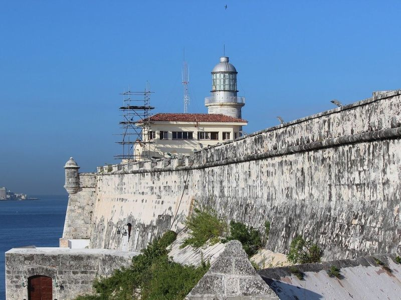
Castle of the Three Kings of Morro
The Castle of the Three Kings of Morro, located in Havana's Old Town, is a historic fort dating back to the late 16th century. It is part of the Morro Cabana Military Historical Park and is a significant defensive structure against pirates and enemy forces. The castle offers panoramic views of the city and is considered one of Spain's most formidable defensive complexes from its colonial era.
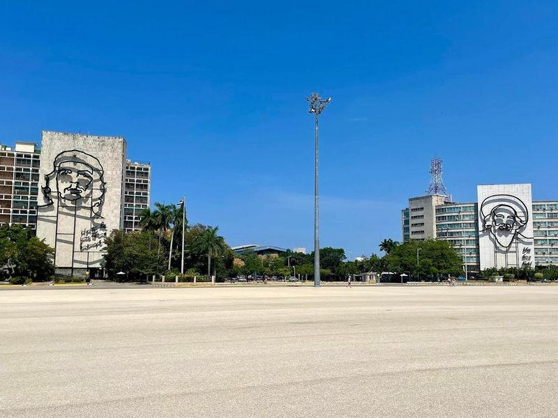
Revolution Square
Revolution Square is a significant site in Havana, Cuba, known for its vast plaza and as the location of many presidential addresses. It features monuments dedicated to Cuban revolutionary heroes. The square holds historical significance as it was the central location for many branches of the regime's government and showcases artwork honoring notable Cubans involved in the revolution. The area has deep political ties and serves as a reminder that Castro's Cuba is still very much alive.
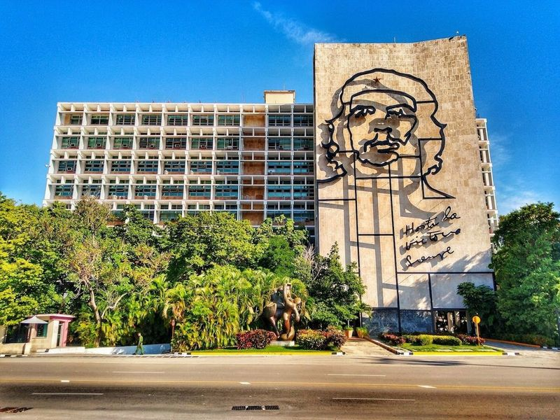
José Martí Memorial.
The José Martí Memorial stands proudly in Havana's Plaza de la Revolución, a tribute to the revered writer and independence advocate. This impressive star-shaped tower, completed in 1958, reaches a height of 109 meters and is adorned with elegant grey-marble tiles.
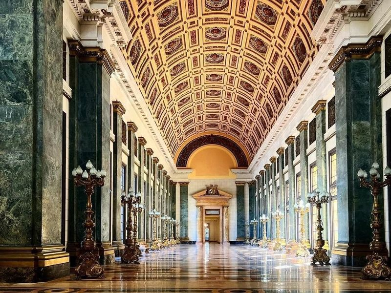
National Capitol of Cuba
The National Capitol of Cuba, a municipal building constructed in 1929, boasts an impressive domed cupola and central portico. Currently undergoing extensive renovations since 2013, it is set to become the new seat of the Cuban Parliament. Designed by Cuban architects Evelio Govantes and Felix Cabarrocas, this Neoclassical structure once served as the government's headquarters until the 1959 Revolution.
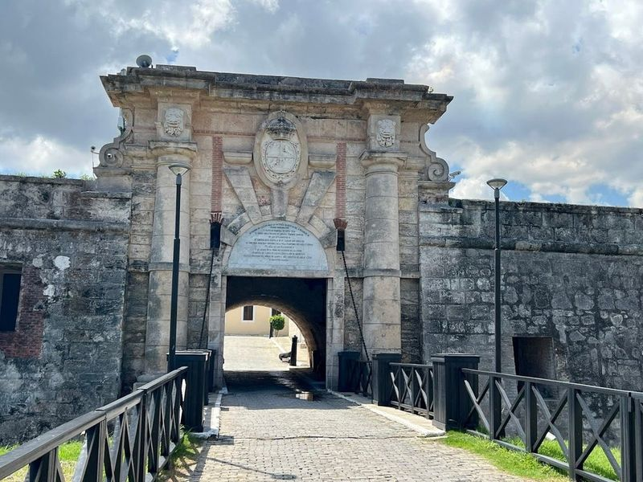
Fort Of San Carlos Of The Cabin
The Fort of San Carlos of the Cabin, an 18th-century fortress complex located in Havana, Cuba, is a significant historical site with a rich past. Built between 1763 and 1774 to strengthen the city's defenses after the British captured Havana in 1762, it stands as a symbol of resilience and strategic importance.
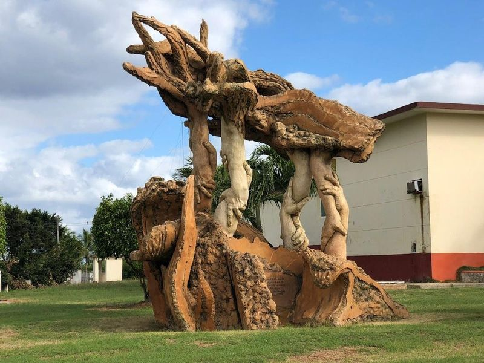
Christ of Havana
The Christ of Havana is a monumental marble statue of Jesus, standing at 23 meters high on a hilltop plaza in Casa Blanca since 1958. Crafted from Carrara marble in Italy and assembled in Cuba, the sculpture offers panoramic views of the city and the bay. The artist intentionally left out the eyes to create an impression of watching over everything.
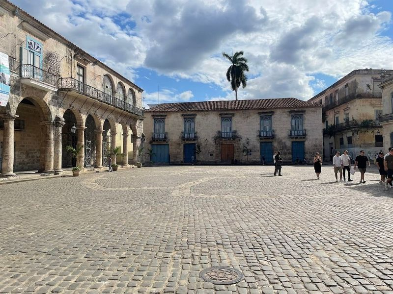
Plaza de la Catedral
Plaza de la Catedral, located in Old Havana, is the original city center close to the bay. It features baroque and neoclassical buildings along narrow cobblestone streets, including landmarks like the City Museum, Havana Cathedral, La Fuerza Fortress, and El Templete. The plaza is bustling with museums, bars, restaurants, and food stands.
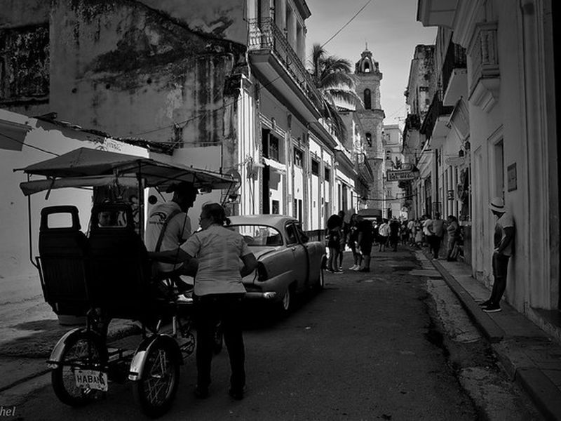
La Bodeguita Del Medio
La Bodeguita Del Medio is listed among principal sites for Havana within Cuba. Municipal and regional heritage listings document its place in the historic centre and travellers routes through Havana. La Bodeguita Del Medio is listed among principal sites for Havana within Cuba.
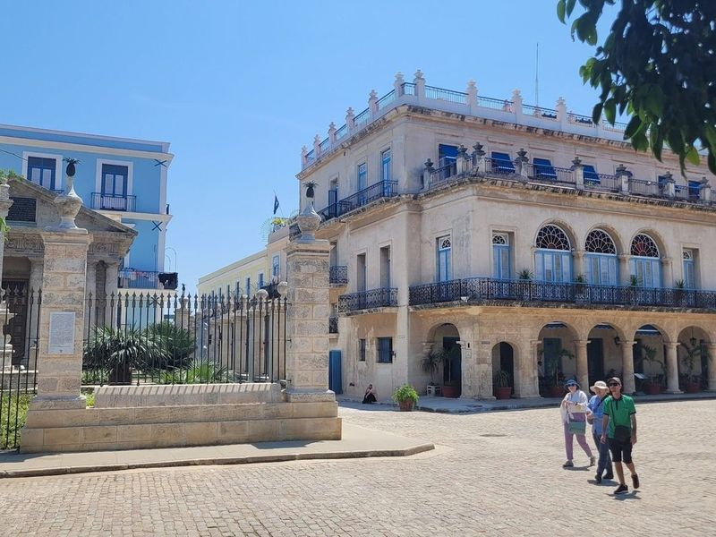
Plaza de Armas
Plaza de Armas, the oldest plaza in the city, is a hub surrounded by restaurants and lined with secondhand book stands. The Palacio de los Capitanes Generales, home to the Museo de la Ciudad, is a Spanish colonial building with a large inner courtyard and grand salons showcasing Havana's history. This historic square also features attractions like Castillo de la Real Fuerza and El Templete.
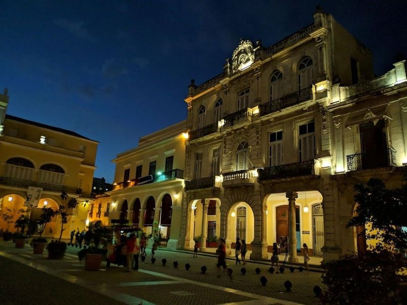
Old Town Square
Old Town Square, also known as Plaza Vieja, is a historic public square in Havana that dates back to 1559. The square features a beautiful fountain and is surrounded by buildings representing various architectural styles from baroque to art nouveau. Once the site of gory public spectacles including executions, it has now transformed into a and colorful space.
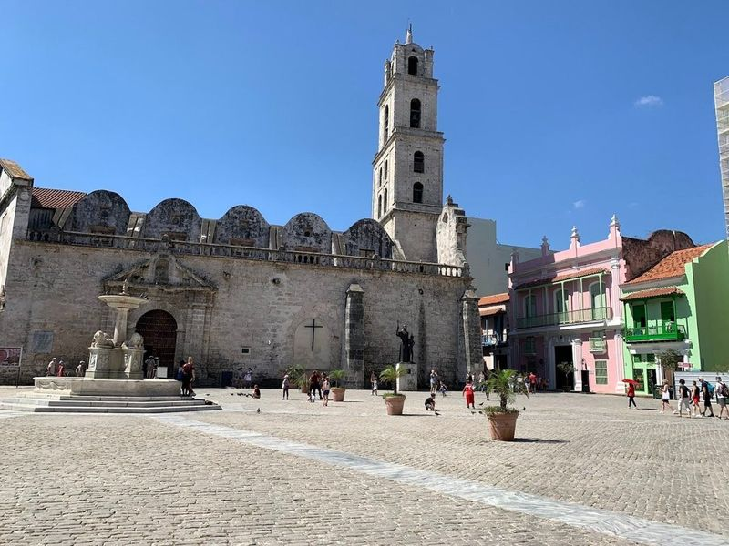
Saint Francis of Assisi Plaza
Plaza de San Francisco de Asís is a charming open cobblestone plaza located near the harbor in Havana. It is part of a route that includes other main squares like Plaza Vieja, Plaza de Armas, and Plaza de la Catedral. The plaza features the Fuente de los Leones fountain and offers a salty air breeze.